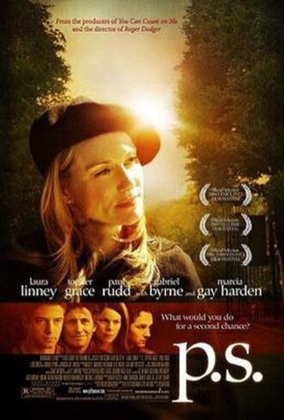

P.S.
In brief
A divorced admissions officer meets a young applicant who seems a reincarnation of her late high-school love.
- Directed by
- Dylan Kidd
- Country
- USA
- Year
- 2004
- Running time
- 90 minutes
- Festival section
- Spotlight on Laura Linney
- Slot
- Spotlight
- With
- Laura Linney, Topher Grace, Paul Rudd, Lois Smith, Gabriel Byrne, Marcia Gay Harden
- Guests
- Laura Linney
- Screenings
- Fri Oct 8, 6:45 PM, Regency
Sun Oct 10, 3:00 PM, Rafael
Source: Festival programme (page 51 of the PDF): Wayback Machine copy; Poster from Wikipedia